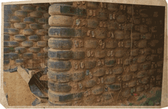
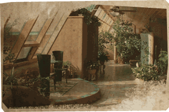

Recycled: The load-bearing walls are constructed by ramming earth inside used tyres and recycled bottles become jewels dotted throughout the structure. Doors and kitchen benches are often rescued from the trash too.
Efficient: Earthships are built to live 'off the grid' and are fitted with solar panels, double-glazing and a 4 step grey-water system to reduce their consumption. High thermal mass and effective sun capture means an Earthship can remain warm without heating even in the snow.

Beautiful: Indoor gardens, sweeping render curves and exposed timber beams all make up the natural aesthetic that defines an earthship. The environment created is somehow both outdoor and outdoor simultaniously.